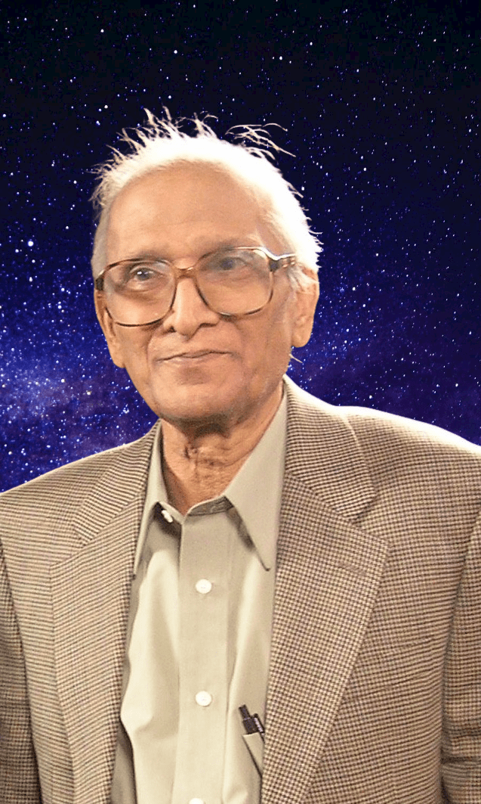

THE ANIRUDDHA ARCHIVE
Scientist, Sanskrit scholar, philosopher, translator, and preserver of Indian spiritual literature.
Dr. G. R. Somayajulu united scientific rigor with deep engagement in Sanskrit and Indian philosophy. His lifelong work includes a rigorous 27-volume interpretative project covering the 108 Upanishads and related philosophical traditions of India.
Rigorous interpretation, transliteration, and philosophical synthesis.
Over 200 original Sanskrit Geetas adapted into musical and dance presentations.
Research in chemistry, thermodynamics, molecular structure, and physical science.
Interdisciplinary investigations into scripts, symbolism, astronomy, and language.
Biography, intellectual journey, and family background.
Overview of literary, scientific, and philosophical work.
Rigorous interpretation and transliteration of Upanishadic literature.
Original Sanskrit compositions and literary works.
Research in chemistry, thermodynamics, and molecular science.
Inquiry into the Self, language, reality, and consciousness.
Linguistic and symbolic investigations into ancient civilization.
Lectures, TV programs, and philosophical discourse.
Photographs, manuscripts, publications, and archival material.